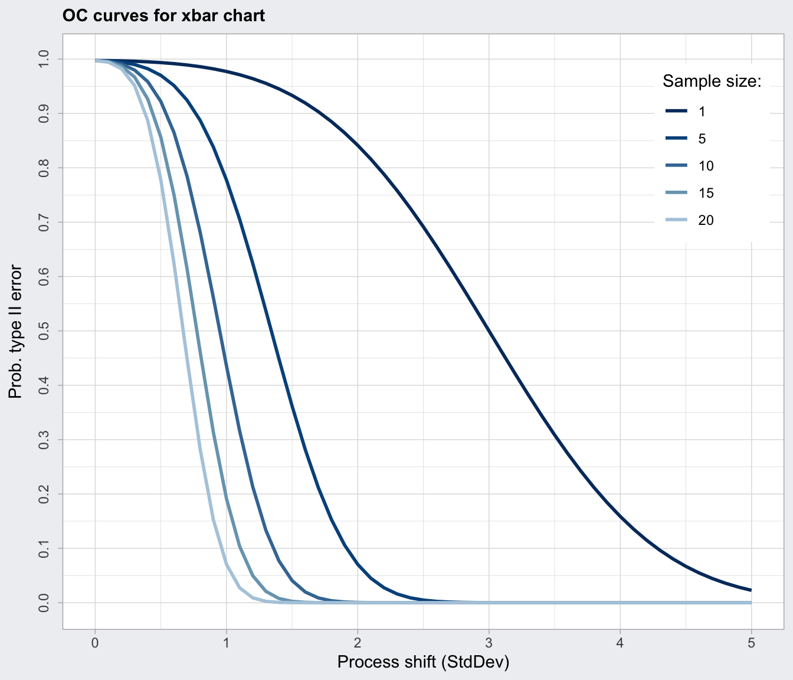

Operating Characteristic Function
oc.curves.RdDraws the operating characteristic curves for a 'qcc' object.
Usage
ocCurves(object, ...)
ocCurves.xbar(object,
size = c(1, 5, 10, 15, 20),
shift = seq(0, 5, by = 0.1),
nsigmas = object$nsigmas, ...)
ocCurves.R(object,
size = c(2, 5, 10, 15, 20),
multiplier = seq(1, 6, by = 0.1),
nsigmas = object$nsigmas, ...)
ocCurves.S(object,
size = c(2, 5, 10, 15, 20),
multiplier = seq(1, 6, by = 0.1),
nsigmas = object$nsigmas, ...)
ocCurves.p(object, ...)
ocCurves.c(object, ...)
# S3 method for class 'ocCurves'
print(x, digits = getOption("digits"), ...)
# S3 method for class 'ocCurves'
plot(x, what = c("beta", "ARL"),
title, xlab, ylab, lty, lwd, col, ...)Arguments
- object
an object of class
'qcc'.- size
a vector of values specifying the sample sizes for which to draw the OC curves.
- shift, multiplier
a vector of values specifying the shift or multiplier values (in units of sigma).
- nsigmas
a numeric value specifying the number of sigmas to use for computing control limits; if
nsigmasisNULL,object$confis used to set up probability limits.- x
an object of class
'ocCurves'.- digits
the number of significant digits to use.
- what
a string specifying the quantity to plot on the y-axis. Possible values are
"beta"for the probability of not detecting a shift, and"ARL"for the average run length.- title
a character string specifying the main title. Set
title = NULLto remove the title.- xlab, ylab
a string giving the label for the x-axis and the y-axis.
- lty, lwd, col
values or vector of values controlling the line type, line width and colour of curves.
- ...
catches further ignored arguments.
Details
An operating characteristic curve graphically provides information about the probability of not detecting a shift in the process. ocCurves is a generic function which calls the proper function depending on the type of 'qcc' object. Further arguments provided through ... are passed to the specific function depending on the type of chart.
The probabilities are based on the conventional assumptions about process distributions: the normal distribution for "xbar", "R", and "S", the binomial distribution for "p" and "np", and the Poisson distribution for "c" and "u". They are all sensitive to departures from those assumptions, but to varying degrees. The performance of the "S" chart, and especially the "R" chart, are likely to be seriously affected by longer tails.
Value
The function returns an object of class 'ocCurves' which contains a matrix or a vector of beta values (the probability of type II error) and ARL (average run length).
References
Mason, R.L. and Young, J.C. (2002) Multivariate Statistical Process Control with Industrial Applications, SIAM.
Montgomery, D.C. (2013) Introduction to Statistical Quality Control, 7th ed. New York: John Wiley & Sons.
Ryan, T. P. (2011), Statistical Methods for Quality Improvement, 3rd ed. New York: John Wiley & Sons, Inc.
Scrucca, L. (2004). qcc: an R package for quality control charting and statistical process control. R News 4/1, 11-17.
Wetherill, G.B. and Brown, D.W. (1991) Statistical Process Control. New York: Chapman & Hall.
Examples
data(pistonrings)
diameter = qccGroups(diameter, sample, data = pistonrings)
oc = ocCurves.xbar(qcc(diameter, type="xbar", nsigmas=3))
oc
#> ── Operating Characteristic Curves ───────────────
#>
#> Chart type: xbar
#>
#> Prob. type II error (beta):
#> sample size
#> shift (StdDev) 1 5 10 15 20
#> 0.0 0.9973 0.9973 0.9973 0.9973 0.9973
#> 0.1 0.9972 0.9966 0.9959 0.9952 0.9944
#> 0.2 0.9968 0.9944 0.9909 0.9869 0.9823
#> :
#> 4.9 0.0287 0.0000 0.0000 0.0000 0.0000
#> 5.0 0.0228 0.0000 0.0000 0.0000 0.0000
#>
#> Average run length (ARL):
#> sample size
#> shift (StdDev) 1 5 10 15 20
#> 0.0 370 370 370 370 370
#> 0.1 353 296 244 206 178
#> 0.2 308 178 110 76 57
#> :
#> 4.9 1 1 1 1 1
#> 5.0 1 1 1 1 1
plot(oc)

data(orangejuice)
oc = with(orangejuice,
ocCurves(qcc(D[trial], sizes=size[trial], type="p")))
#> Warning: Some computed values for the type II error have been rounded due to the discreteness of the binomial distribution. Thus, some ARL values might be meaningless.
oc
#> ── Operating Characteristic Curves ───────────────
#>
#> Chart type: p
#>
#> Prob. type II error (beta):
#>
#> fraction nonconforming beta
#> 0.00 0.0000
#> 0.01 0.0894
#> 0.02 0.2642
#> :
#> 0.99 0.0000
#> 1.00 0.0000
#>
#> Average run length (ARL):
#>
#> fraction nonconforming ARL
#> 0.00 1
#> 0.01 1
#> 0.02 1
#> :
#> 0.99 1
#> 1.00 1
plot(oc)
 data(circuit)
oc = with(circuit,
ocCurves(qcc(x[trial], sizes=size[trial], type="c")))
#> Warning: Some computed values for the type II error have been rounded due to the discreteness of the Poisson distribution. Thus, some ARL values might be meaningless.
oc
#> ── Operating Characteristic Curves ───────────────
#>
#> Chart type: c
#>
#> Prob. type II error (beta):
#>
#> average nonconforming beta
#> 0.00 0.0000
#> 1.00 0.0006
#> 2.00 0.0166
#> :
#> 64.00 0.0000
#> 65.00 0.0000
#>
#> Average run length (ARL):
#>
#> average nonconforming ARL
#> 0.00 1
#> 1.00 1
#> 2.00 1
#> :
#> 64.00 1
#> 65.00 1
plot(oc)
data(circuit)
oc = with(circuit,
ocCurves(qcc(x[trial], sizes=size[trial], type="c")))
#> Warning: Some computed values for the type II error have been rounded due to the discreteness of the Poisson distribution. Thus, some ARL values might be meaningless.
oc
#> ── Operating Characteristic Curves ───────────────
#>
#> Chart type: c
#>
#> Prob. type II error (beta):
#>
#> average nonconforming beta
#> 0.00 0.0000
#> 1.00 0.0006
#> 2.00 0.0166
#> :
#> 64.00 0.0000
#> 65.00 0.0000
#>
#> Average run length (ARL):
#>
#> average nonconforming ARL
#> 0.00 1
#> 1.00 1
#> 2.00 1
#> :
#> 64.00 1
#> 65.00 1
plot(oc)